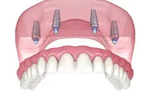
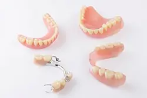
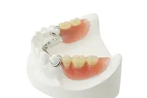
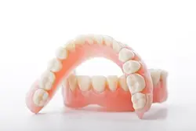
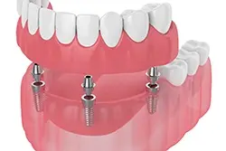
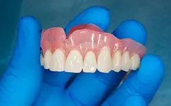
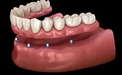

Throughout your life, you had never expected to live with the complications caused by missing teeth. Unfortunately, now you can no longer enjoy your favorite foods, speak clearly, or smile with confidence because you suffer from tooth loss. To fill the empty spaces, our dentists in Texarkana have the solutions you need. With dentures or partials, you can regain a complete, confident smile. Although they have a bad reputation for looking fake in the past, rest assured that we use the highest quality materials to create a smile that looks natural. To see if dentures are right for you, give us a call today to schedule your consultation.
Who's a Good Candidate for Dentures?
Dentures are a tried-and-true tooth-replacement solution that has helped countless patients achieve a healthier, happier smile. So, if you are struggling with moderate to severe tooth loss, don’t hesitate to schedule a consultation at our Texarkana dental office! You can also read on for more information, including what qualifies you for dentures.
Read more
Effects of Missing Teeth
In the months and years following tooth loss, many patients experience:
- Low Self-Esteem – Without a complete smile, patients often struggle to feel confident and begin to avoid social situations, even with loved ones.
- Trouble Enunciating Clearly – Since your tongue moves against the back of your teeth to create sound, it’s very common for patients to have trouble communicating clearly.
- Difficulty Chewing – A weak bite usually leaves patients with one choice: to eat applesauce, yogurt, pudding, and other extremely soft foods on repeat.
What Qualifies You for Dentures?
As we mentioned above, dentures are an excellent choice for people dealing with moderate to severe tooth loss. What’s more, practically any healthy adult can be considered a good candidate for them! However, you’ll still need to come visit us for a consultation to make sure dentures are a good choice for you. After we’ve gone over your tooth-replacement goals and options, we’ll check the health of your mouth. It’s important that issues like tooth decay and gum disease are taken care of before we fit you for dentures. After all, we want your new smile to feel as good as it looks!
Alternative Tooth-Replacement Options

If we decide together that dentures aren’t the best solution for you, then we will discuss the other smile-rebuilding solutions we offer, including:
- Dental Bridges – Anchored in place with two dental crowns, dental bridges can replace one tooth or up to four teeth consecutively. Since every aspect of the restoration is custom-made with your face shape, dental needs, and aesthetic goals in mind, it will feel and look extremely natural as well.
- Dental Implants – This state-of-the-art tooth-replacement solution has skyrocketed in popularity in recent years. This is largely due to the fact that they can help patients at all stages of tooth loss. However, they can also last for 30+ years with proper care, they help prevent bone loss, and they provide unmatched stability.
If you’re interested in finding out if you’re a good dentures candidate, there’s only one thing left to do: schedule a consultation with us so we can learn all about your dental history, needs, and goals.
Types of Dentures

Every tooth in your mouth has an important role to promote your oral health and functions. When even one is missing, it significantly impacts your daily life as well as your dental health. If you do not replace them, the complications will continue, which can eventually lead to additional tooth loss.
To rehabilitate your smile and your quality of life, we can fill the empty spaces with a variety of types of dentures in Texarkana. Depending on your unique needs and preferences, we may recommend one of the following:
Partial Dentures

If you have several missing teeth, partials may be the solution for you. It involves a removable oral appliance that features a gum-colored plate that is designed to mimic your gums. The base holds your new prosthetic teeth, which is attached to a metal framework or attachments. This allows it to connect it to your remaining natural teeth to hold it in place.
Although it may feel a bit awkward at first, in no time at all you will be able to speak and chew with ease. With the right aftercare, your new smile will last for about 5 years before needing to be replaced. To promote its longevity, it is best to take the time to clean it each day while also visiting your dentist regularly for adjustments.
Full Dentures

Complete tooth loss on the top or bottom arch can be treated with a full denture. Now, several advancements have been made to allow them to look and feel more natural than ever before. An acrylic gum-colored base is made from impressions of your mouth. Custom-made prosthetic teeth are attached to it. To hold the denture in place, an adhesive or suction is used.
A denture provides an affordable and convenient solution to treat your tooth loss. To ensure that your new smile lasts, it is best to take the time to clean and soak it each day. To promote the ideal fit, visit your dentist regularly for adjustments.
Implant Dentures

If you would like a more permanent solution for your dentures, an implant denture may be for you. Instead of relying on your remaining teeth or suction with your gums to stay in place, this type of denture is anchored into your mouth with four or more dental implants. Dental implants are placed in the jawbone to recreate the roots of missing teeth, giving the dentures they support unmatched comfort, functionality, and longevity. We’ll discuss your candidacy for implant dentures during your consultation.
How Dentures are Made
Dentures need to be carefully personalized in order to make sure they fit comfortably and look as natural as possible. The process of creating dentures that meet your specific needs takes several steps, and the end result is a high-quality prosthesis that you can rely on for eating, speaking, and smiling. Just how are dentures made? Read on to learn about the basics of the process.
Read more
What are Dentures Made Of?
Dentures have two main parts that are made of different materials. The base of the dentures is typically composed of acrylic, which is a lightweight, easy-to-mold material that can be made to closely resemble your gums. Meanwhile, the artificial teeth of the dentures can potentially be made out of resin or porcelain. In many cases, porcelain is preferred thanks to its natural appearance and its durability.
The Denture Creation Process

When you visit our practice for dentures, we’ll begin the process by capturing impressions of your upper and lower jaw. This is an important step for determining the correct size and shape for your final prosthesis. We’ll use the impressions to create a model of your mouth, which will be sent to a trusted dental lab.
Using the provided model as a reference, the technicians at the lab will create a temporary denture base out of wax. A number of artificial teeth will be placed into the wax using a device called an articulator. Some adjustments may be made to the wax base to help it look more natural. Afterward, the wax dentures will be sent to our office.
We’ll set up an appointment with you so that we can make sure that the dentures fit correctly. If they do, we’ll send them back to the lab for the next stage. The dentures will be placed in a flask, which will be exposed to boiling water. The heat will cause the wax base to melt away, but plaster will be used to help the dentures keep their shape.
Acrylic will be injected into the flask in order to replace the wax and act as the new, permanent base for the dentures. Once the completed prosthesis has been taken out of the flask, the lab technicians may need to trim away any unneeded acrylic. They will then send the dentures back to our office, allowing us to schedule your final fitting appointment.
Adjusting to Your New Dentures
When you first get dentures, there may be some mild discomfort, and it will take time to get used to eating and speaking with your new prosthesis. But there’s no need to worry; as long as you keep wearing your dentures, your mouth will eventually adjust to them. In order to make sure that the adjustment process goes smoothly, you should exercise your facial muscles and maintain a diet of soft, easy-to-chew foods.
The Benefits of Dentures
When you are missing multiple teeth, it can be challenging to do things that you once found easy. This includes things like eating your food, enunciating your words, and smiling without feeling self-conscious. If you have experienced significant tooth loss, dentures can help to improve your quality of life. Here are just some of the amazing benefits that you can experience as a denture-wearer.
Read more
Psychological Benefits
Those who are missing all of their teeth often have difficulty accepting their tooth loss. Along with this comes effects on self-esteem and social life, as well as a higher risk of experiencing sadness and depression. When you restore your smile with dentures, you can enjoy an increase in confidence and self-esteem. Dentures can reduce anxieties about your appearance, speech articulation, chewing ability, and much more!
Clearer Enunciation
Missing teeth can make it a lot more challenging to speak clearly. To pronounce and perform words, your lips and teeth need to be positioned properly. When you aren’t able to touch your tongue to your teeth, some words become very challenging to say. Because dentures replace your missing teeth, they can allow you to enunciate more clearly when you speak. After just a short adjustment period, you will be talking away just like you used to!
Improves Nutrition
Many nutritious foods are tough in texture. This includes vegetables, fruits, and healthy proteins. When you aren’t able to chew your food thoroughly due to tooth loss. You can experience issues like indigestion and even malnutrition! With an improved ability to chew your food, dentures can help you enjoy a more expansive diet full of nutrients. Ultimately, dentures can help you receive the essential nutrients you need to thrive.
Preserves Oral Health
If you still have some remaining natural teeth, getting dentures can help to prevent them from shifting around to fill in gaps. Dentures also help to bear some of the weight of regular chewing, therefore reducing the wear and tear of the existing teeth.
Expands Opportunities
First impressions are important! This is especially the case when it comes to job interviews, promotions, and sales. Your smile is one of the very first things people notice about you, so having a complete smile is nothing but an advantage. In fact, studies have found that the probability of being employed is negatively associated with having poor oral health.
Understanding the Cost of Dentures
Don’t let the cost of dentures in Texarkana prevent you from replacing your missing teeth. They are more affordable than many people realize. There’s not a set fee for dentures because every smile is unique. We create comfortable, high-quality prosthetics to accommodate everyone’s financial situation. We’ll provide you with a personalized estimate and discuss your payment options to enjoy a complete smile again without breaking the bank.
Read more
Factors that Affect the Cost of Dentures
Your denture is custom-made to fit your mouth like a glove. This ensures optimal comfort and performance while natural-looking materials create a realistic appearance. Since your new smile is customized to meet your exact needs, various factors affect the amount you’ll pay. After performing an initial consultation, your denture dentist in Texarkana will create a personalized treatment plan. While every case differs, most patients can expect to pay for:
- Preparatory Procedures: It’s common to need pre-work before getting your dentures, like periodontal therapy or tooth extractions.
- Types of Dentures: The number of teeth you’re replacing, and the materials used affect the amount you’ll pay.
- Materials: There are discounted materials, but they can cost more in the long run because they aren’t durable.
We will explain all your options and the fees associated with your plan during your consultation. You’ll know exactly what you’ll be required to pay to have the peace of mind you need to invest in dentures in Texarkana.
Are Implant Dentures More Expensive?

Implant dentures are more expensive than traditional prosthetics, but for good reason. Unlike regular dentures, dental implants can last for decades with the proper care, like committing to your oral hygiene. You’ll save money long-term because you’ll never need to pay to have them replaced. Implant dentures also replicate both the roots and crowns to preserve your jawbone to prevent common problems associated with tooth loss. You’ll reduce your overall oral health expenses to save even more money down the road while enjoying a nearly perfect replica of your real smile.
Does Dental Insurance Cover Dentures?
Every dental insurance policy differs, but many plans can be used to offset the cost of dentures. Although it’s not likely they will cover the entire amount, they can lower your out-of-pocket balance for certain steps in your procedure. After paying your annual deductible, your insurance can pay up to 80% of the cost until reaching your yearly limit. We’ll help you maximize your coverage to replace your missing teeth without draining your wallet.
Other Options for Making Dentures Affordable
In addition to dental insurance, we offer many solutions to keep dentures affordable for everyone, including:
- Traditional Payments: We accept cash, checks, and credit cards for convenient payments.
- Third-Party Financing: You can pay for your dentures using low monthly installments based on your credit approval.
If you’re ready to have a beautiful smile, or you have questions about paying for dentures, contact our office today to speak with a member of our team.
Denture FAQs
Tooth loss is an issue that affects approximately 178 million Americans, but this doesn’t mean that you need to go the rest of your life with gaps in your smile. Dentures are a lifechanging option for patients who are missing several, most of, or all of their teeth, but you may still have some questions. Here are the answers to the most common questions we receive about dentures. If you don’t see the information, you’re looking for below, don’t worry. Just give us a call and we’d be happy to help:
Read more
Should I Have all My Teeth Pulled to Get Dentures?
Repairing a damaged tooth whenever possible is always a preferable option than replacing it. Tooth extractions of any kind will only ever be recommended if deemed absolutely necessary, like when a tooth is too damaged to save thanks to extensive decay, a severe infection, or trauma to the mouth. If all the teeth in an arch are decayed or infected, replacing them may be most cost effective in the long run, but we will always explore all of your options before considering this.
Can I Sleep with My Dentures?
Dentists generally recommend that you take your dentures out before going to sleep. When you first get your dentures, you’ll typically be told to keep them in your mouth for 24 hours, including nighttime, but after this, you should be taking them out each night. Wearing dentures restricts the circulation in your gums, leading to soft tissue irritation and potentially speeding up ridge resorption. Taking dentures out gives the gums a chance to recover and get the nutrients they need during the night. The dark, moist space beneath the dentures is the perfect place for bacteria to thrive, so sleeping with dentures has been associated with a higher risk of pneumonia. Generally, it is a good idea to take them out.
Will It Hurt to Get Dentures?
If you need to have teeth extracted before you get dentures, you’re likely to experience some discomfort after the oral surgery. Take your prescribed pain medication as directed and this should improve 3 to 5 days after the procedure. When you first get your new dentures, you may experience some minor irritation as your mouth adjusts. The amount of time this takes varies from person to person. If you are switching to a new pair of dentures, the process may take longer than before. If your pain persists, give us a call. This way, we can check for underlying issues that need to be addressed.
Will Dentures Change the Shape of My Face?
When you lose teeth, your facial muscles will sag over time, giving your face a sunken appearance. Getting dentures will help to provide support to the facial muscles that have collapsed and improve your appearance. If you realize that your dentures aren’t quite fitting right, come see us to have them refitted or replaced. Ill-fitting dentures may not be providing your facial muscles with the proper support.
Complete Your Smile Today
If you are ready to stop living with the challenges of missing teeth, Pleasant Grove Family Dentistry has the solutions you need. We will perform a comprehensive consultation to create a customized treatment plan to restore your smile with dentures or partials.
To start your journey to an improved quality of life, contact our office today to schedule your consultation.
Torin M. Marracino, DDSNicholas Cockerell, DDS
Ready to book a visit?
Call our Texarkana office or send a request. Same-day appointments for urgent dental issues.